Graph Neural Networks
Extending neural networks to graph-structured data
Huanfa Chen - huanfa.chen@ucl.ac.uk
13/12/2025
Recap: Neural Networks (or MLP)

Recap: Convolutional Neural Networks (CNN)
- Local filter
- Translation invariance

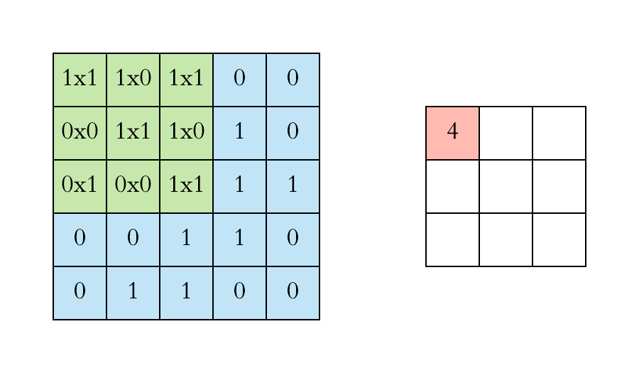
Graph Neural Networks
Principles
- A deep learning framework for graph-structured data
- It generalises traditional neural networks to handle graph data by leveraging the relationships between nodes in a graph
- Message passing: nodes aggregate neighbor features over the graph
- Variants differ in how neighbors are aggregated and weighted
Major GNN Architectures
- GCN: shared filters; normalised neighborhood aggregation (spectral → spatial)
- GraphSAGE: inductive sampling + learnable aggregators (mean/pool/LSTM)
- GAT: attention over neighbors; learns edge weights; multi-head for capacity
- Not today’s focus, but worth mentioning
- DeepWalk: unsupervised node embeddings via random walks (word2vec-like)
- ChebNet: spectral filtering via Chebyshev polynomials; localised convolutions
Graph Convolutional Networks (GCN)

Introduction: Graphs
- Graph = organised data representation
- Consists of vertices (nodes) V and edges E
- Edges can be weighted or binary
- Edges can be directed or undirected
Example graph:
\[V = \{A, B, C, D, E, F, G\}\] \[E = \{(A,B), (B,C), (C,E), ...\}\]
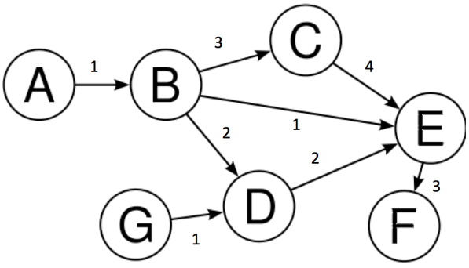
Graph Terminology
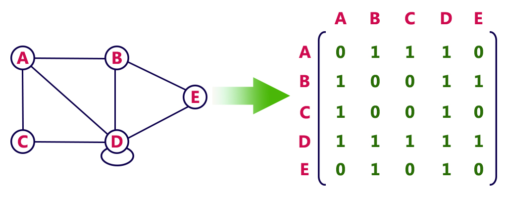
- Node: An entity in the graph (represented by circles)
- Edge: Line joining two nodes (represents relationships)
- Degree: Number of edges incident with a vertex
- Adjacency Matrix: N×N matrix representing graph structure
Why GCNs?
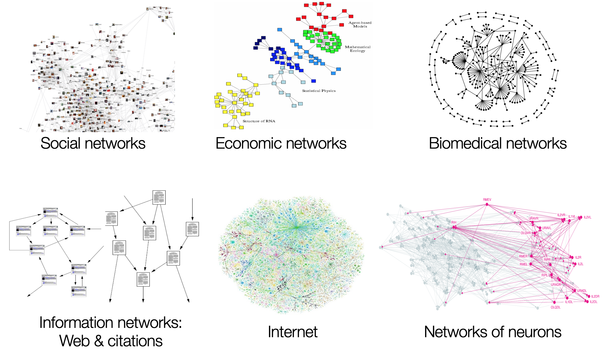
Why GCNs?
- Most real-world datasets come as graphs or networks:
- Social networks
- Protein-interaction networks
- The World Wide Web
- Learning on graphs enables domain-specific insights
- Conventional CNNs assume compositional structure on Euclidean space
- 2D grids (images)
- 1D sequences (text, audio)
CNNs vs GCNs
CNN Key Properties:
- Locality
- Stationarity (Translation Invariance)
- Multi-scale hierarchies
Problem: Not all data lies on Euclidean space!
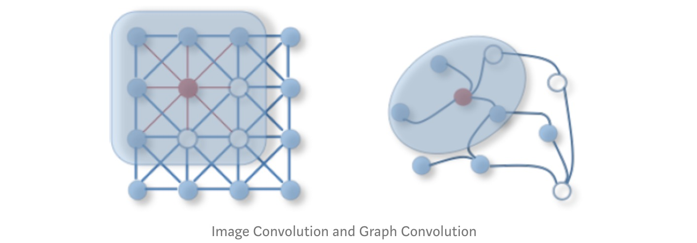
Applications of GCNs
Facebook Link Prediction for Suggesting Friends using Social Networks- Friend prediction algorithms
- Social network analysis
- Protein interaction prediction
- Knowledge graph completion
What are GCNs?
- Neural networks operating on graphs
- Capture neighbourhood information for non-euclidean spaces
- Re-define convolution for graph domains
Two Styles:
- Spectral GCNs: Graph signal processing perspective; Flourier transform on graphs; frequency domain
- Spatial GCNs: Aggregate feature information from neighbours; more flexible (OUR FOCUS!)
How GCNs Work? Friend Prediction
Task: Predict future friendships
- Edges = friendships
- More common friends → higher likelihood
- \((1,3)\) have 2 common friends
- \((1,5)\) have 0 common friends
- So, \((1,3)\) is more likely to become friends than \((1,5)\)
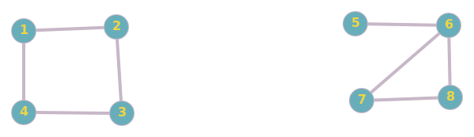
Try it again - Friend Prediction
Problem: Predict future friendships
- \((1,11)\) have 1 common friends and distance of 2
- \((3,11)\) have 0 common friends and distance of 4
- So, \((1,11)\) is more likely to become friends than \((3,11)\)
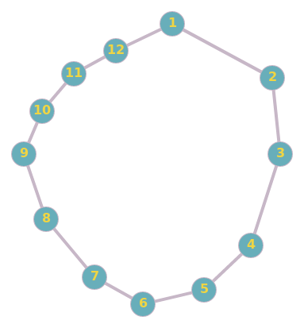
How to implement this idea MATHMATICALLY?
- Using filtering, from CNN?
- In CNN, we apply a filter on an image to get representation of next layer
- In a graph, we apply a filter to create the next layer representation, by aggregating the features of neighbours
- Note: in each layer, the graph structure is fixed, but the features of each node are updated.
Adjacency matrix & feature matrix
Adjacency matrix \[ A = \begin{pmatrix} 0 & 1 & 0 & 1 & 0 & 0 & 0 & 0 \\ 1 & 0 & 1 & 0 & 0 & 0 & 0 & 0 \\ 0 & 1 & 0 & 1 & 0 & 0 & 0 & 0 \\ 1 & 0 & 1 & 0 & 0 & 0 & 0 & 0 \\ 0 & 0 & 0 & 0 & 0 & 1 & 0 & 0 \\ 0 & 0 & 0 & 0 & 1 & 0 & 1 & 1 \\ 0 & 0 & 0 & 0 & 0 & 1 & 0 & 1 \\ 0 & 0 & 0 & 0 & 0 & 1 & 1 & 0 \end{pmatrix} \]
Feature matrix (Randomly initialised. Can be anything like age, hobby) \[ H^0 = \left( \begin{array}{ccc} 1 & 0 & 1 \\ 1 & 1 & 0 \\ 0 & 1 & 1 \\ 1 & 1 & 1 \\ 0 & 0 & 1 \\ 0 & 1 & 0 \\ 1 & 0 & 0 \\ 1 & 1 & 0 \end{array} \right) \]
Update rule for a node in a new layer
- Iteratively, calculate new features for each node in a new layer by aggregating from neighhours in the previous layer
- Each layer represent ‘friends’ information at different ‘hops’ \[ h_v^i = \sum_{u \in \mathcal{N}(v)} h_u^{i-1} \]
where \(\mathcal{N}(v)\) is the set of immediate neighbours of \(v\), excluding \(v\) itself.
Layer 1: \(H^1 = A H^0\)
- Node 1 (Neighbours: 2, 4):\(h_1^1 = h_2^0 + h_4^0 = [1, 1, 0] + [1, 1, 1] = \mathbf{[2, 2, 1]}\)
- Node 3 (Neighbours: 2, 4):\(h_3^1 = h_2^0 + h_4^0 = [1, 1, 0] + [1, 1, 1] = \mathbf{[2, 2, 1]}\)
- Node 5 (Neighbour: 6):\(h_5^1 = h_6^0 = \mathbf{[0, 1, 0]}\)
- Note: Node 1 and 3 have identifical features after one layer, due to same set of neighbours.
- \((1,3)\) is more similar than \((1,5)\)
Layer 2: \(H^2 = A H^1\). Friend-of-friend
- Node 1 (Neighbours: 2, 4):\(h_1^2 = h_2^1 + h_4^1 = [1, 1, 2] + [1, 1, 2] = \mathbf{[2, 2, 4]}\)
- Node 3 (Neighbours: 2, 4):\(h_3^2 = h_2^1 + h_4^1\)\(h_3^2 = [1, 1, 2] + [1, 1, 2] = \mathbf{[2, 2, 4]}\)
- Node 5 (Neighbour: 6):\(h_5^2 = h_6^1\)\(h_6^1 = h_5^0 + h_7^0 + h_8^0 = [2, 1, 1] = \mathbf{[2, 1, 1]}\)
- \((1,3)\) is more similar than \((1,5)\)
GCN Mathematical Formulation
Layer-wise propagation:
\[H^{i} = f(H^{i-1}, A)\]
\[f(H^{i}, A) = σ(AH^{i}W^{i})\]
where:
- \(A\) = N × N adjacency matrix
- \(W^{(l)}\) = learnable weight matrix for layer \(l\)
- \(H^{0} = X\) (initial features)
- \(X\) = input feature matrix (N × F, F = number of features)
- \(σ\) = ReLU activation function
- Each layer aggregates neighborhood features from previous layer
Problem 1: No self-representation
- New features don’t include node’s own features
- Node 1 and 3 become identical after one layer, despite different initial features
- Node 1 (Neighbours: 2, 4):\(h_1^1 = h_2^0 + h_4^0 = [1, 1, 0] + [1, 1, 1] = \mathbf{[2, 2, 1]}\)
- Node 3 (Neighbours: 2, 4):\(h_3^1 = h_2^0 + h_4^0 = [1, 1, 0] + [1, 1, 1] = \mathbf{[2, 2, 1]}\)
- Solution: Add self-loops
- Add identity: \(\hat{A} = A + I\)
- Node 1: \(h_1^1 = h_1^0 + h_2^0 + h_4^0 = [1,0,1] + [1,1,0] + [1,1,1] = \mathbf{[3, 2, 2]}\)
- Node 3: \(h_3^1 = h_2^0 + h_3^0 + h_4^0 = [1,1,0] + [0,1,1] + [1,1,1] = \mathbf{[2, 3, 2]}\)
- Now, they are different due to self-loops
Problem 2: Degree scaling
- High-degree nodes get larger values; low-degree nodes get smaller values
- Node 5 (Self + 6):\(h_5^1 = h_5^0 + h_6^0 = [0, 0, 1] + [0, 1, 0] = \mathbf{[0, 1, 1]}\)
- Node 6 (Self + 5, 7, 8):\(h_6^1 = h_6^0 + h_5^0 + h_7^0 + h_8^0 = [0, 1, 0] + [0, 0, 1] + [1, 0, 0] + [1, 1, 0] = \mathbf{[2, 2, 1]}\)
- Solution: Normalise by degree
- Symmetric normalisation: \(\hat{D}^{-\frac{1}{2}}\hat{A}\hat{D}^{-\frac{1}{2}}\), where \(\hat{D}\) is degree matrix of \(\hat{A}\)
- \(\tilde{d}_5 = 2, \tilde{d}_6 = 4, \tilde{d}_7 = 3, \tilde{d}_8 = 3\)
- \(h_5^1 = \left( \frac{1}{\sqrt{\tilde{d}_5 \cdot \tilde{d}_5}} \right) h_5^0 + \left( \frac{1}{\sqrt{\tilde{d}_5 \cdot \tilde{d}_6}} \right) h_6^0 = \frac{1}{2}[0, 0, 1] + \frac{1}{\sqrt{8}}[0, 1, 0] \approx \mathbf{[0, 0.35, 0.5]}\)
- \(h_6^1 = 0.25[0, 1, 0] + 0.35[0, 0, 1] + 0.28[1, 0, 0] + 0.28[1, 1, 0] \approx \mathbf{[0.56, 0.53, 0.35]}\)
Final GCN Propagation Rule
\[f(H^{(l)}, A) = \sigma\left( \hat{D}^{-\frac{1}{2}}\hat{A}\hat{D}^{-\frac{1}{2}}H^{(l)}W^{(l)}\right)\]
where:
- \(\hat{A} = A + I\) (adjacency + self-loops)
- \(I\) = identity matrix
- \(\hat{D}\) = diagonal degree matrix of \(\hat{A}\)
- \(W^{(l)}\) = learnable weight matrix for layer \(l\)
- \(\sigma\) = activation function
Implementing GCN in PyTorch
GCN Convolutional Layer
class GCNConv(nn.Module):
def __init__(self, A, in_channels, out_channels):
super(GCNConv, self).__init__()
self.A_hat = A + torch.eye(A.size(0))
self.D = torch.diag(torch.sum(A,1))
self.D = self.D.inverse().sqrt()
self.A_hat = torch.mm(torch.mm(self.D, self.A_hat), self.D)
self.W = nn.Parameter(torch.rand(in_channels,out_channels))
def forward(self, X):
out = torch.relu(torch.mm(torch.mm(self.A_hat, X), self.W))
return outGCN Network Architecture
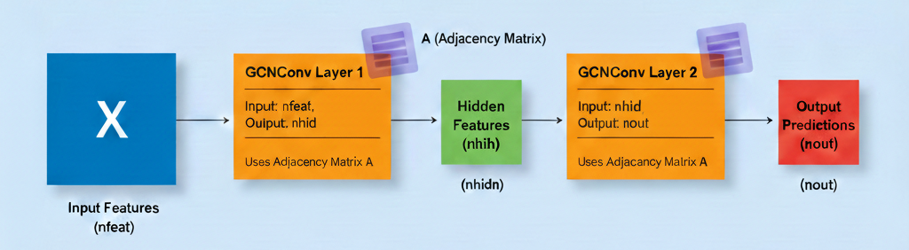
Case Study: Zachary’s Karate Club
Context (1970-1972):
- Observed local karate club
- Conflict between administrator “John A” and instructor “Mr. Hi” led to club split into two groups
- Based on this graph, aim to predict which members join which group

Semi-Supervised Learning Setup
- Labels known for only 2 nodes: John A (0) and Mr. Hi (1)
- Predict labels for all other members based on graph structure
- Use graph connectivity to propagate information
Training the Model
X=torch.eye(A.size(0)) # Identity matrix as initial X features
# Here we are creating a network with 10 features in hidden layer and 2 in output layer (John A's group vs Mr. Hi's group)
# Initialise network
model = Net(A, X.size(0), 10, 2)
# Loss and optimizer
criterion = torch.nn.CrossEntropyLoss(ignore_index=-1)
optimizer = optim.SGD(model.parameters(), lr=0.01, momentum=0.9)
# Training loop
for epoch in range(200):
optimizer.zero_grad()
loss = criterion(model(X), target)
loss.backward()
optimizer.step()Training the model
- What parameters are trained? Weight matrix W and a bias vector for each layer (intercept)
- Layer 1 (conv1): A matrix of size (nfeat, nhid)
- Layer 2 (conv2): A matrix of size (nhid, nout)
\[f(H^{(l)}, A) = \sigma\left( \hat{D}^{-\frac{1}{2}}\hat{A}\hat{D}^{-\frac{1}{2}}H^{(l)}W^{(l)}\right)\]
Training Visualisation
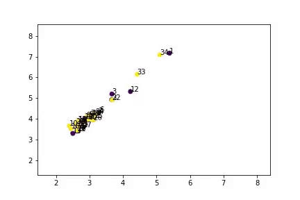
Node embeddings learned during training- Model successfully separates two groups
- Close to actual predictions (except node 9)
- Semi-supervised learning works!
PyTorch Geometric
PyTorch Geometric (PyG):
- Dedicated library for graph deep learning
- Easy, fast, and simple implementation
- Active development and community
Features:
- Pre-built GCN layers
- Various graph datasets
- Efficient sparse operations
from torch_geometric.nn import GCNConv
class GCN(torch.nn.Module):
def __init__(self):
super().__init__()
self.conv1 = GCNConv(num_features, 16)
self.conv2 = GCNConv(16, num_classes)
def forward(self, x, edge_index):
x = self.conv1(x, edge_index)
x = F.relu(x)
x = self.conv2(x, edge_index)
return F.log_softmax(x, dim=1)GraphSAGE
Why GraphSAGE (Sample and Aggregate)?
- GCNs are transductive: requires full graph structure; can’t generalise to unseen nodes/graphs
- GraphSAGE is inductive: learns aggregation functions that can be applied to unseen nodes/graphs
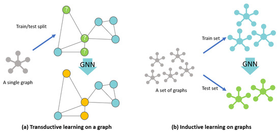
Transductive vs inductive learning on graph. Source: https://www.mdpi.com/2220-9964/10/2/97Why GraphSAGE (Sample and Aggregate)?
- GraphSAGE is more scalable: neighborhood sampling to generate mini-batches, rather than processing the entire graph at once
- GraphSAGE allows for learnable aggregators: mean, pooling (MLP + max), LSTM; where GCN uses fixed mean aggregation
- GraphSAGE learns weights per layer; where GCN uses fixed weights from adjacency matrix
- GraphSAGE treats self-representation and neighbours differently: concatenating.
GraphSAGE Aggregators
- Mean aggregator: elementwise mean over neighbors
- Pool aggregator: transform neighbor features using a MLP, then max-pool
- LSTM aggregator: sequence model over randomly ordered neighbors
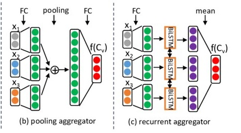
Example of GraphSAGE update rules
- Step 1: Initial Features (\(H^0\))
- Node 6: \(h_6^0 = [0, 1]\)
- Neighbours (5, 7, 8): \(h_5^0 = [0, 0]\), \(h_7^0 = [1, 0]\), \(h_8^0 = [1, 1]\)
Step 2: Aggregate the Neighbours
\[\text{AGG}_{\text{neigh}} = \text{mean}([0, 0], [1, 0], [1, 1]) = [0.66, 0.33]\]
Step 3: Concatenation
- Join the self-vector and the neighbour-vector (increase dimension from 2 to 4) \[\text{CONCAT}(h_6^0, \text{AGG}_{neigh}) = [ \underbrace{0, 1}_{\text{Self}}, \underbrace{0.66, 0.33}_{\text{Neighbours}} ]\]
Step 4: Linear Transformation (\(W^k\))
- Bring the dimension back, from 4 to 2
- Suppose \(W^1\) is a \(2 \times 4\) matrix \[h_6^1 = \sigma \left( \begin{pmatrix} w_{11} & w_{12} & w_{13} & w_{14} \\ w_{21} & w_{22} & w_{23} & w_{24} \end{pmatrix} \cdot \begin{bmatrix} 0 \\ 1 \\ 0.66 \\ 0.33 \end{bmatrix} \right)\]
Why concatenation works?
- Identity Preservation: in GCN, if Node 6 has 100 neighbours, its own features only contribute \(1\%\) to the next layer. In GraphSAGE, the self-features always occupy a dedicated portion of the input to the next layer (as the first half of the concat vector).
- Flexible Weighting: weight matrix \(W\) can learn to weight “self” differently than “neighbours”.
- Note: \(W\) is learned per layer from training, not fixed.
- It might learn that your own interests are more important for friend prediction than your neighbours’ interests.
When to use GCN or GraphSAGE?
- Use GCN for small, static, or fully known graphs where node information does not change rapidly.
- Use GraphSAGE for large, dynamic, or streaming graphs, where you need to generate embeddings for unseen or new nodes without retraining the entire model.
Graph Attention Networks (GAT)
Why GAT?
- Treating neighhours differently: GCN use fixed aggregation (mean, sum, etc.) that treats all neighbors equally. GAT learns to assign different importance to different neighbors using attention mechanisms.
- Weight Calculation: GCN uses fixed, structural weights (based on graph Laplacian). GAT learns these weights dynamically during training
- Better Performance: GAT generally outperforms GCN on node classification task. GATs are particularly effective when the graph structure is complex or sparse.
- Higher Computational Complexity: GAT is more resource-intensive and slower to train; GCN is faster and more situable for large-scale graphs.
What is ATTENTION in GAT?
- Attention weight \(\alpha_{i,j}\) measures the importance of neighbor \(j\) to node \(i\)
\(h_i^{(l+1)} = \sigma \left( \sum_{j \in \mathcal{N}_i} \alpha_{ij}^{(l)} \mathbf{W}^{(l)} h_j^{(l)} \right)\)
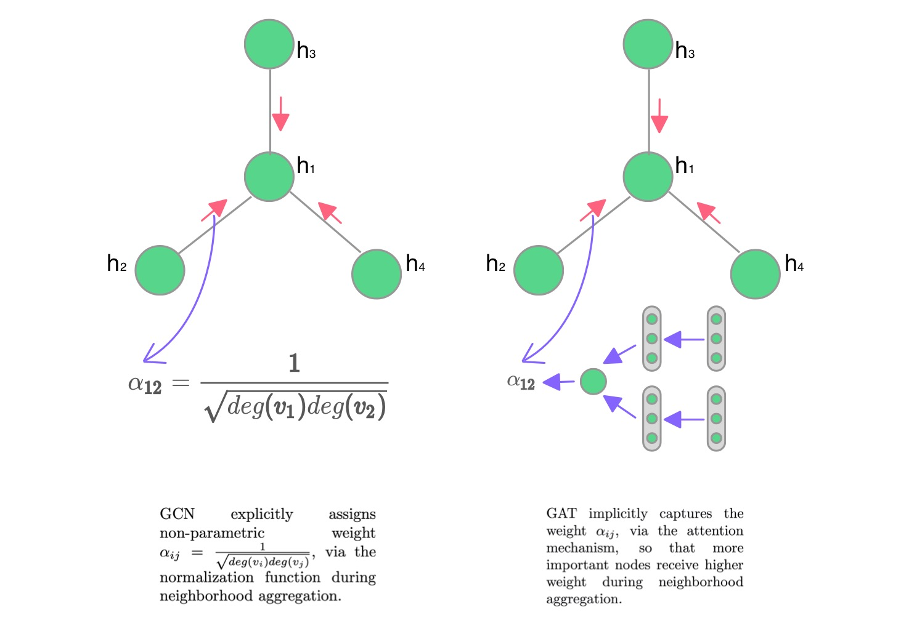
Attention weight
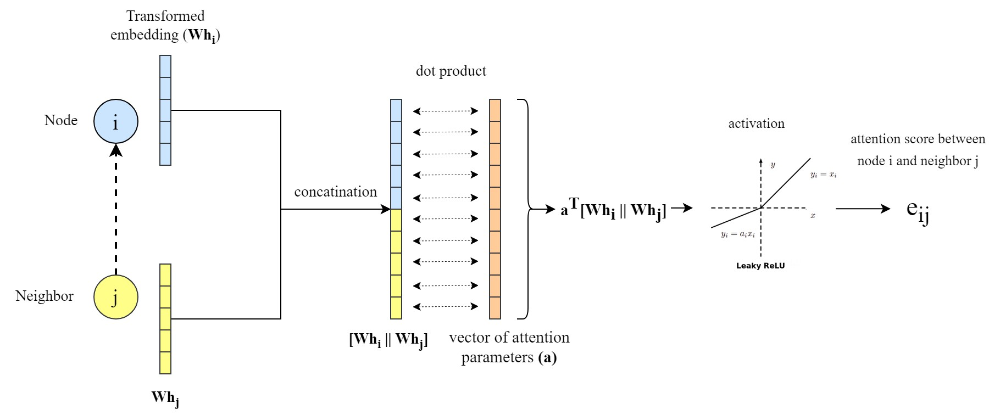
- A clear explanation: https://epichka.com/blog/2023/gat-paper-explained/
Masked Attention
- Only weights for neighbors are computed, others masked
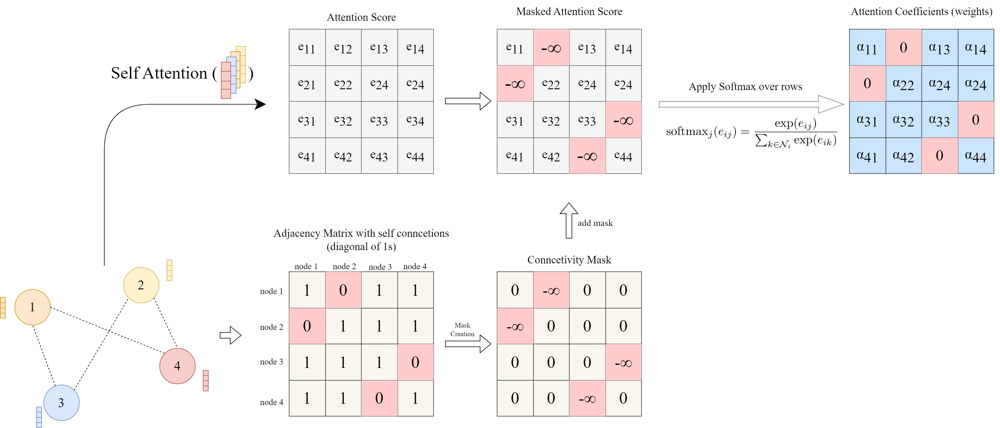
Multi-head Attention to stabilise learning
- To mitigate randomness in calculating attention weights, e.g. random initialisation
\[h_i^{(l+1)} = \sigma \left( \frac{1}{K} \sum_{k=1}^{K} \sum_{j \in \mathcal{N}_i} \alpha_{ij}^{k} \mathbf{W}^{k} h_j^{(l)} \right)\]
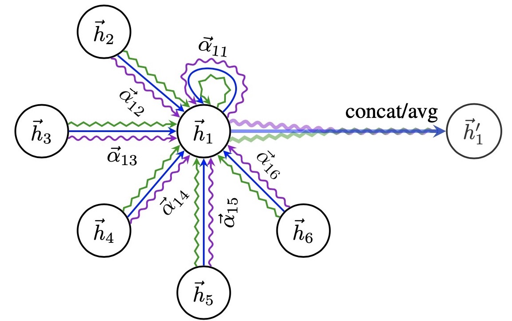
Concatenate intermediate heads; average at final layerAttention visualisation for interpretability
- To understand which neighbors are most influential for a node
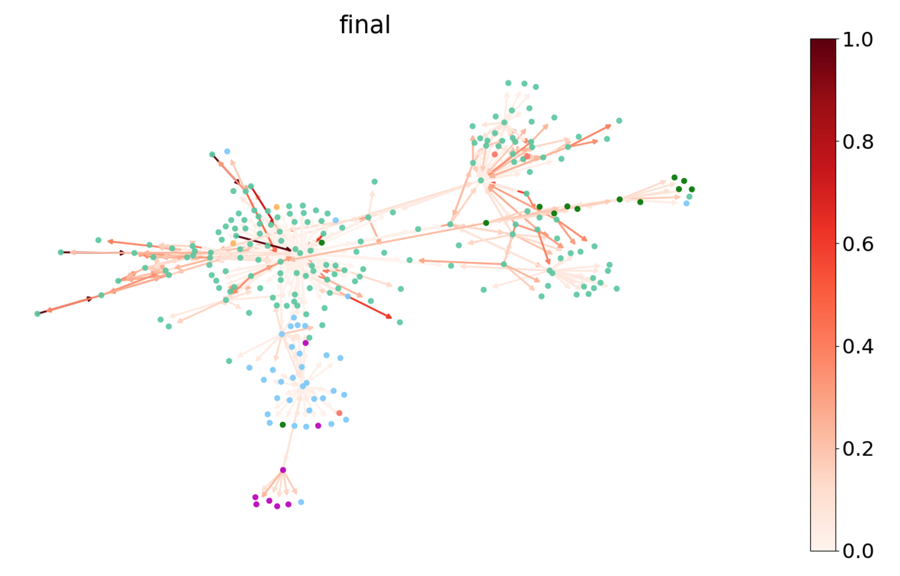
https://www.dgl.ai/blog/2019/02/17/gat.htmlKey Takeaways
- GCNs extend neural networks to non-Euclidean graph data
- Aggregate and transform neighbourhood information
- Address self-representation and degree scaling issues
- Semi-supervised learning on graphs is powerful
- Applications: social networks, molecules, knowledge graphs
Q: How powerful are GCNs really?
Resources
Key Papers:
- Semi-Supervised Classification with GCNs - Kipf & Welling (2017)
- Thomas Kipf’s Blog on GCNs
Libraries:
Questions?

© CASA | ucl.ac.uk/bartlett/casa